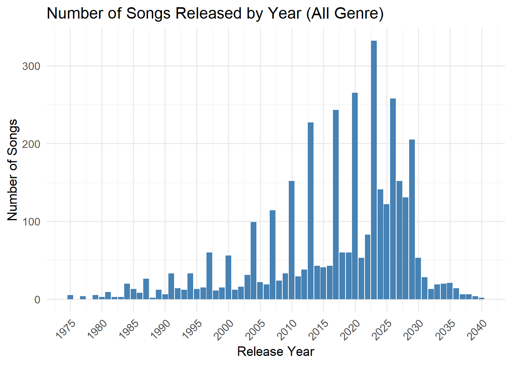

In the code chunk below str() is used to reveal the structure of kg object.
Show the code
str(kg, max.level =1)
List of 5
$ directed : logi TRUE
$ multigraph: logi TRUE
$ graph :List of 2
$ nodes :'data.frame': 17412 obs. of 10 variables:
$ links :'data.frame': 37857 obs. of 4 variables:
Show the code
#Extracting the edges and nodes tablesnodes_tbl <-as_tibble(kg$nodes)edges_tbl <-as_tibble(kg$links)
Creating Knowledge Graph
Before we can go ahead to build the tidygraph object, it is important for us to ensures each id from the node list is mapped to the correct row number. This requirement can be achive by using the code chunk below.
Show the code
#Mapping from node id to row indexid_map <-tibble(id = nodes_tbl$id,index =seq_len(nrow(nodes_tbl)))#Map source and target IDs to row indicesedges_tbl <- edges_tbl %>%left_join(id_map, by =c("source"="id")) %>%rename(from = index) %>%left_join(id_map, by =c("target"="id")) %>%rename(to = index)#Filter out any unmatched (invalid) edgesedges_tbl <- edges_tbl %>%filter(!is.na(from), !is.na(to))#Creating tidygraphgraph <-tbl_graph(nodes = nodes_tbl, edges = edges_tbl, directed = kg$directed)class(graph)
[1] "tbl_graph" "igraph"
Visualising the knowledge graph
In this section, we will use ggraph’s functions to visualise and analyse the graph object.
Several of the ggraph layouts involve randomisation. In order to ensure reproducibility, it is necessary to set the seed value before plotting by using the code chunk below.
Show the code
set.seed(1234)
Visualising the whole graph
In the code chunk below, ggraph functions are used to visualise the whole graph.
Warning: ggrepel: 17411 unlabeled data points (too many overlaps). Consider
increasing max.overlaps
Notice that the whole graph is very messy and we can hardy discover any useful patterns. In order to gain meaningful visual discovery, it is always useful for us to looking into the details, for example by plotting sub-graphs.
This bar chart above shows the distribution of different edge types in the music relationship network. The most common type is PerformerOf, indicating that the data heavily captures who performed which work. Other frequent types include ComposerOf, LyricistOf, and ProducerOf, highlighting the importance of creative and production roles. In contrast, relationships like MemberOf and DirectlySamples are less common, suggesting these connections are either rarer or less documented.
This bar chart displays the distribution of different node types in the music network dataset. The most common type is Person, with a count far exceeding other categories, indicating a strong focus on individual artists, producers, and contributors. Songs also appear in large numbers, highlighting the dataset’s emphasis on works being created or performed. Other types like Albums, RecordLabels, and MusicalGroups are present but in significantly smaller quantities.
This table summarizes key performance metrics for each artist, including Total Works, Years Active, First Chart Year, Notable Works, Notable Years, and Average Works per Year.
To identify emerging talents, we calculate a composite Rising Star Score using the following formula:
This scoring system gives additional weight to artists who consistently produce notable works and maintain visibility over multiple years, while also accounting for their overall productivity.
The table above lists the Top 10 artists with the highest Rising Star Scores, highlighting those who show strong potential and rising influence in the Oceanus Folk community.
Number of Songs and Album by Genre
Code
# Count the number of Songs and Albums in each genregenre_summary <- nodes_tbl %>%filter(`Node Type`%in%c("Song", "Album")) %>%count(genre, `Node Type`) %>%pivot_wider(names_from =`Node Type`, values_from = n, values_fill =0) %>%arrange(desc(Song + Album))print(genre_summary)
# A tibble: 26 × 3
genre Album Song
<chr> <int> <int>
1 Dream Pop 152 590
2 Indie Folk 108 342
3 Synthwave 74 308
4 Doom Metal 80 268
5 Oceanus Folk 70 235
6 Alternative Rock 53 205
7 Southern Gothic Rock 57 185
8 Indie Rock 52 156
9 Americana 39 145
10 Psychedelic Rock 32 140
# ℹ 16 more rows
There are 26 unique genre in total in the network. Dream Pop have greates amount of release in terms of both song and albums among all genres. Dream pop have almost twice as many songs as the second genre(Indie Folk) do.
#| code-fold: true#| warning: false#| message: false# 1. Sort by song countgenre_order <- genre_summary %>%arrange(desc(Song)) %>%pull(genre)# 2. transform to long tablegenre_long <- genre_summary %>%pivot_longer(cols =c(Song, Album), names_to ="Type", values_to ="Count") %>%mutate(genre =factor(genre, levels = genre_order))# 3. plot the chartggplot(genre_long, aes(x = genre, y = Count, fill = Type)) +geom_bar(stat ="identity", position =position_dodge(width =0.9)) +#geom_text(aes(label = Count),#position = position_dodge(width = 0.9),#hjust = 1.05, color = "black", size = 3.2) +labs(title ="Number of Songs and Albums by Genre (Sorted by Song Count)",x ="Genre",y ="Count" ) +theme_minimal() +coord_flip()

Dream Pop and Indie Folk have the most songs overall. In most genres, there are more songs than albums. Oceanus Folk is somewhere in the middle, with a fair number of both songs and albums. Some genres, like Celtic Folk and Sea Shanties, have very few works. This suggests that a few genres are very active, while many others are less popular or more niche
Number of Song Release by Year
Code
# Step 1: Filter song nodes with valid release datesongs_by_year <- nodes_tbl %>%filter(`Node Type`=="Song", !is.na(release_date)) %>%count(release_date, name ="count") %>%mutate(release_date =as.numeric(release_date)) # ⬅️ 确保为 numeric 类型# Step 2: Plot chart with readable x-axisggplot(songs_by_year, aes(x = release_date, y = count)) +geom_col(fill ="steelblue") +scale_x_continuous(breaks =seq(min(songs_by_year$release_date, na.rm =TRUE),max(songs_by_year$release_date, na.rm =TRUE),by =5) ) +labs(title ="Number of Songs Released by Year (All Genre)",x ="Release Year",y ="Number of Songs" ) +theme_minimal(base_size =13) +theme(axis.text.x =element_text(angle =45, hjust =1))
The dataset covers song releases from 1975 to 2040. In general, the number of releases increased steadily from 1975, peaking around 2023. After that, the trend declines and returns to levels similar to those in the 1990s.
Number of Song and Album Release in Oceanus Folk Genre by Year
Code
# Step 1: Filter Oceanus Folk Songs and Albums with release dateoceanus_by_year <- nodes_tbl %>%filter(genre =="Oceanus Folk",`Node Type`%in%c("Song", "Album"),!is.na(release_date)) %>%count(release_date, `Node Type`, name ="count") %>%mutate(release_date =as.numeric(release_date)) # ⬅️ 转换为数值型# Step 2: Plot chart with dodged barsggplot(oceanus_by_year, aes(x = release_date, y = count, fill =`Node Type`)) +geom_col(position ="dodge", width =0.7) +scale_x_continuous(breaks =seq(min(oceanus_by_year$release_date, na.rm =TRUE),max(oceanus_by_year$release_date, na.rm =TRUE),by =5) ) +labs(title ="Number of Oceanus Folk Songs and Albums by Year",x ="Release Year",y ="Count" ) +scale_fill_manual(values =c("Song"="#2f4b7c", "Album"="#b2defd")) +theme_minimal(base_size =13) +theme(axis.text.x =element_text(angle =45, hjust =1))
This chart shows the number of Oceanus Folk songs and albums released by year. The number of releases gradually increased from the early 2000s and peaked around 2023.Most of the releases are songs, while albums remain fewer across all years. After 2023, there is a slight decline, but both songs and albums continue to be released steadily until the late 2030s. Before 2010, Oceanus Folk activity was very limited. This suggests that Oceanus Folk started gaining popularity in the 2010s and became most active in the early 2020s.